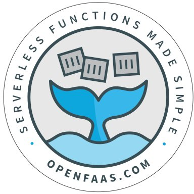

Projects

TRAFFIC AWARE SCALING OPTIMIZATION IN OPENFAAS
- Proposed and Implemented a traffic aware scaling algorithm for the OpenFaaS platform for changing the static parameters during scaling
- Improved run times and request handling by 30% for Data Science Functions written in the Function-as-a-service model in the OpenFaaS framework
- Reduced the response time in the proposed design by 50% compared to time taken in Default Static Scaling implementation

MULTI-LABEL CLASSIFICATION FOR LAND COVER DETECTION
- Executed a Transfer learning approach to identify the land cover features from a given multi-spectral image consisting of 12 bands from Sentinel-2 Satellite
- Analyzed the raster bands reactivity to different land forms based on resolutions
- Obtained a recall of 63.80 for all the bands and a recall of 63.00 when used the RGB bands for prediction

NEIGHBOURHOOD ANALYSIS USING PYTHON
- Analyzed the neighborhoods of New York City and identified areas with high potential for Indian Cuisine Restaurants
- Identified localities preferable to live where Indian Cuisine Restaurants are available using a rating scale of 10

TWITTER SENTIMENT ANALYSIS
- Led the development and implementation of various deep learning models (including BERT, CNN, LSTM, BiLSTM) for sentiment analysis on Twitter data. Explored combinations of these models such as BERT-CNN, BERT-LSTM, and BERT-BiLSTM to predict sentiments (positive, negative, neutral, and irrelevant) associated with Twitter entities.
- Conducted extensive experimentation and analysis using Jupyter Notebooks to fine-tune models and enhance sentiment classification performance. Explored the integration of BERT embeddings with different architectures and tested multiple model combinations (CNN, LSTM, BiLSTM) to optimize sentiment analysis results.
- Collaborated with a team to drive the project's success, contributing to its development and analysis.

BLOGGING WEBSITE
- Spearheaded the development of a Blogging Website using HTML, CSS, JavaScript, PHP, and MySQL. Implemented user authentication, message posting, and reply functionalities.
- Orchestrated the deployment of the website on a local server using XAMPP, facilitating Apache and MySQL server management.
- Collaborated with a team to create a blogging platform with robust features, incorporating user authentication, message posting, and reply functionalities.

PREMIER LEAGUE RESULT PREDICTION
- Predicted match results by taking the history of respective teams, the venue of the match, and the season of the IPL series with an accuracy of 99%

MULTI-THREADED FILE SYNC SYSTEM
- Created a Python-based system enabling seamless file operations (upload, download, rename, delete) between client and server using RPC based communication Protocols
- Designed and integrated a helper thread automating file creation, modification, and deletion processes between the client and server. Employed asynchronous communication for optimized handling of file tasks, enhancing system efficiency.
- Developed synchronous and asynchronous communication functionalities between the client and server.